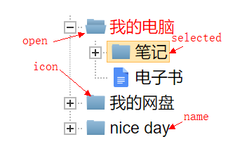
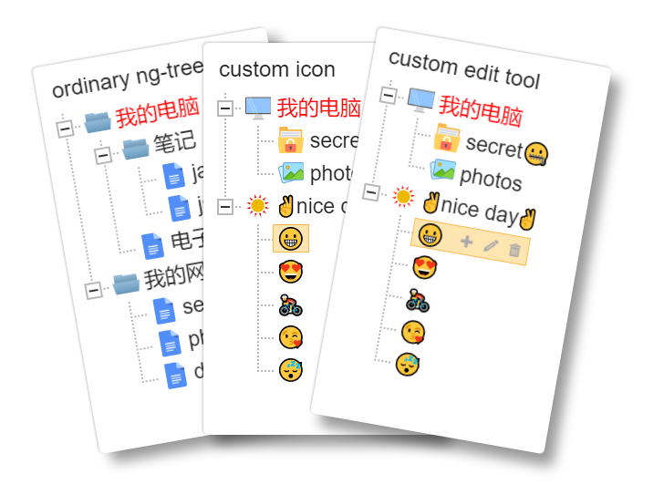
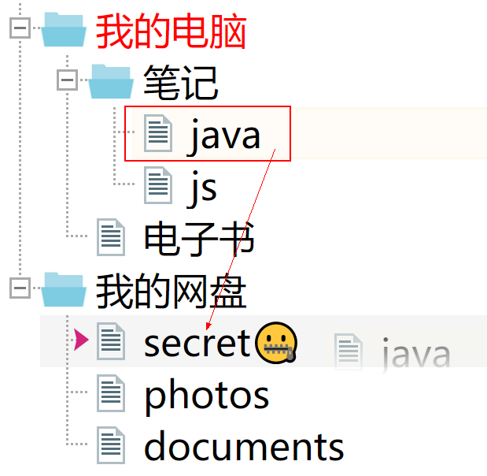
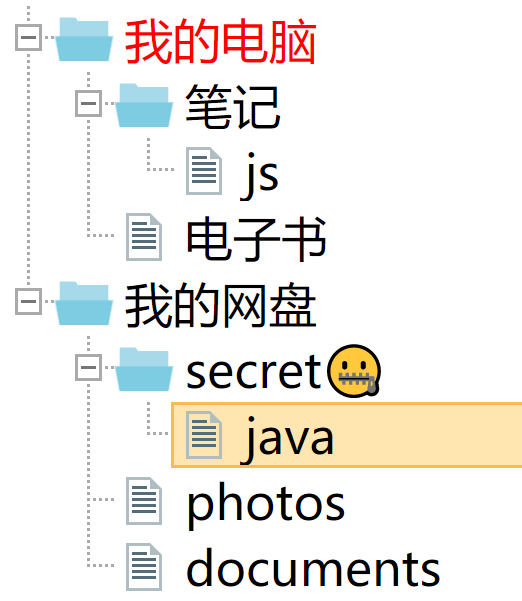

rename from angular4-tree to ng.tree!
   
npm install ng.tree
ngTree component. useage :
<ngTree [treeData]="TreeData[]" [treeConfig]="TreeConfig"></ngTree>
public searchNodes(nodes:any[], condition:string|{[key:string]:any}, ignoreCase?:boolean):any[],only work for tree root instancepublic findNodeSiblings(node:any):any[],only work for tree root instancepublic findNodeParent(node:any):any,only work for tree root instance, if node belongs to root, return an empty object, otherwise return nulldata for creating tree
name?:string,tree node nameisOpen?:boolean,collapse or not(node has subtree)iconClass?:string|boolean,a class selector add to icon element, false to disable node iconnameClass?:string,a class selector add to name elementchildren?:TreeData[],sub tree dataisChecked?:boolean,is checkedtools?: {name:string, title?:string}[],customized edit buttononFold? : (node?:any) => boolean;,execute before treenode collapse or uncollapse, returns false to disable the default actiononClick? : (node?:any) => void;,trigger on icon or name clickonDragstart? : (event:MouseEvent , node?:any, parent?:any, siblings?:any, index?:number) => void;onDrop? : (event:MouseEvent , node?:any, parent?:any, sibliings?:any, index?:number, position?:string) => void;onDragover? : (event:Event, node?:any, parent?:any, sibliing?:any, index?:number) => boolean;,return true to enable droponToolClick? : (node?:any, toolname?:string) => void;trigger on tool button clickdataFilter?: (nodeData?:any) => any,format customized data to TreeData. effect on tree inittools?: {name:string, title?:string}[],customized edit buttonenableTools?:boolean,enable toolbar or notdataMap?any,format customized data to TreeData
dataMap.name?:string,default to "name"dataMap.isOpen?:string,deafult to 'isOpen'dataMap.iconClass?:string,default to "iconClass"dataMap.nameClass?:string,default to "nameClass"dataMap.children?:string,default to "children"dataMap.isChecked?:string,default to "isChecked"dataMap.tools?:string,default to "tools"dataMap.enableTools? : string,default to "enableTools"talk is cheape, show you my code
import css
<link rel="stylesheet" href="../node_modules/ng-tree/style/tree.css">
use it
import {Component, NgModule} from '@angular/core';
import {BrowserModule} from "@angular/platform-browser";
import {platformBrowserDynamic} from "@angular/platform-browser-dynamic";
import {NgTree} from "ng.tree";
@Component({
selector: 'app',
template: `<ngTree [treeData]="treeData" [treeConfig]="treeConfig"></ngTree>`
})
export class App {
public treeData: any[] = [{
name: "folder",
isOpen:true,
iconSelector:"computer",
nameSelector:"warning",
nodes: [{
name: 'file'
}]
},{
name: 'another folder',
nodes:[{
name: 'another file'
}]
}];
public treeConfig : any = {
dataMap:{
children:"nodes"
}
}
}
@NgModule({
imports: [BrowserModule],
entryComponents:[NgTree],
declarations: [NgTree, App],
bootstrap: [App]
})
export class AppModule {}
platformBrowserDynamic().bootstrapModule(AppModule);